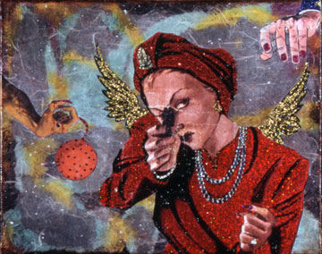
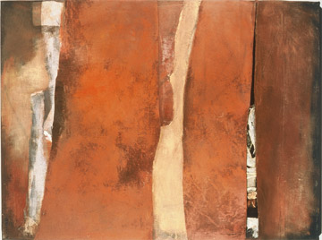

|
> Previous Exhibitions > 2006
Previous Exhibitions
2006
2013 | 2012 | 2011 | 2010 | 2009 | 2008 | 2007 | 2006 | 2005 | 2004
2003 | 2002 | 2001 | 2000
Ann Lyne | Equestrian Paintings & Drawings
and
Annie Harris Massie | Light & Place
and
Shelby Fischer | act five scene five
Ann Lyne | Equestrian Paintings & Drawings
17 - 28 October 2006
11–5, Tuesday – Saturday
Closing
Friday, 27 October. 5:30 - 7:30 pm
Ann Lyne. Indian Cove, 2005. Oil and charcoal on canvas, 16 x 20"
>
Artist
Annie Harris Massie | Light & Place
27 October – 25 November 2006
11–5, Tuesday – Saturday
Opening
Friday, 27 October. 5:30 - 7:30 pm
Annie Harris Massie. Brownsburg in the Afternoon, Catharine's House, 2006. Oil on Canvas, 30 x 40"
> Artist
Shelby Fischer | act five scene five
3 – 25 November 2006
11–5, Tuesday – Saturday
Opening, First Friday
Friday, 3 November. 5:30 - 7:30 pm

Shelby Fischer. Cheer Up. Mixed media collage, 16 x 20"
> Artist
Complicit Codex!
and
Martha Saunders | Oscillating Vistas
Complicit Codex!
Exhibition dates | Lower gallery
1 September - 14 October 2006
11–5, Tuesday – Saturday
in conjunction with the UVa Art museum exhibition Complicit!
Books and art by
> Susan Bee
> Johanna Drucker
> Brad Freeman
> Ruth Laxson
> Joan Lyons
> Emily McVarish
> Clifton Meador
> Philip Zimmerman
Martha Saunders | Oscillating Vistas
Exhibition dates | Upper gallery
1 September - 14 October 2006
11–5, Tuesday – Saturday
Opening
1 September. 5:30 - 7:30 pm 
Martha Saunders. Suspended Sites V & VI (detail), 2005.
Encaustic and mixed media on wood panels
> Artist
Gloria & David Lee
Exhibition dates | Upper & lower galleries
14 July - August 25 2006
11-5, Tuesday - Saturday
Opening
14 July, 5:30-7:30 pm
Gloria Lee. Roosters, mid-1970s to mid-1980s
Mixed media, 2: 47 ½ x 42 1/8”, $7,500
David Lee, Continuum, 1965
Acrylic on canvas, 7: 42 x 28”, $12,000
> Artist - Gloria Lee
> Artist - David Lee
Jan Aronson
Mystery: The Leaves Series
Exhibition dates | Upper & lower galleries
2 June - 8 July 2006
11-5, Tuesday-Saturday
First Friday
2 June, 5:30-7:30 pm
Jan Aronson.
Leaves #56, 2006, oil on canvas, 28 x 42"
John Borden Evans
New Paintings
Exhibition dates | Upper & lower galleries
3-27 May 2006
11-5, Tuesday-Saturday
First Friday
5 May, 5:30-7:30 pm
John Borden Evans.
North Garden Night, 2005, acrylic on canvas, 20 x 32.5"
SOLD.

John Borden Evans.
Moses & Ella at Night, 2006.acrylic on 100% rag paper, 19x21".
SOLD.

John Borden Evans. Resting Charolaise, 2004.
acrylic on canvas, 64x48".
SOLD.
> Artist
Terra Incognita: Forty Years of Anne Slaughter, 1966-2006
and
Trisha Orr
Terra Incognita: Forty Years of Anne Slaughter, 1966-2006
Exhibition dates | Lower gallery
3 March - 29 April 2006
First Friday Opening
3 March, 5:30 - 7:30 pm

Anne Slaughter. Zagora, 1995, mixed media, 36 x 48 inches
> Artist
Trisha Orr
Exhibition dates | Upper gallery
3 March - 29 April 2006
First Friday Opening
3 March, 5:30 - 7:30 pm
Trisha Orr. Floating World, 1995. Oil on canvas, 18 x 12".
> Artist
Donna Mintz | borrowed poems
and
Celia Reisman | Places: Real & Imagined
Exhibition dates
20 Jan - 25 Feb 2006
11-5, Tuesday - Saturday
Friday Opening
January 20
5:30 - 7:30 pm
Donna Mintz. Installation. Each panel 3 x 3"
Celia Reisman. Looking for Arcadia, 2005
Oil on canvas, 34 x 56"
> Artist - Donna Mintz
|